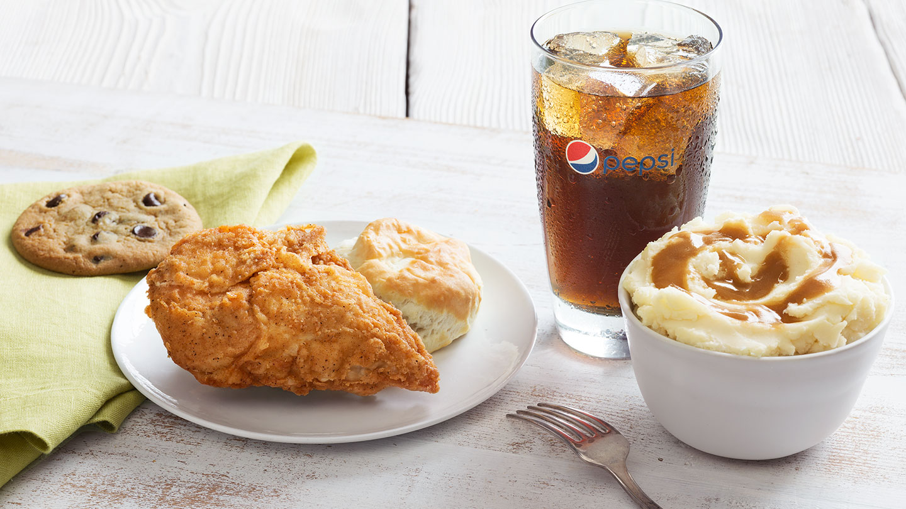
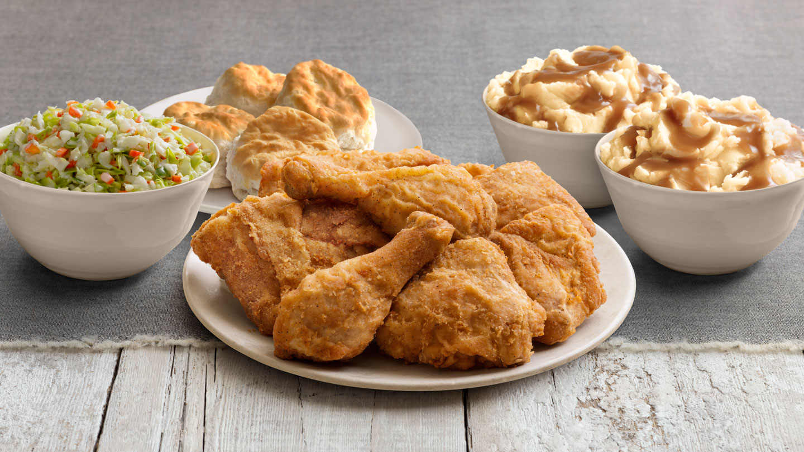

Khuyến Mại!
Chi tiết sản phẩm
Gà rán KFC


- KFC (viết tắt của Kentucky Fried Chicken, tiếng Việt: Gà rán Kentucky) là một chuỗi các nhà hàng đồ ăn nhanh chuyên về gà rán, có trụ sở tại Louisville, Kentucky, Hoa Kỳ. Đây là chuỗi nhà hàng lớn thứ 2 thế giới (ước tính dựa trên doanh thu) sau McDonald's, với 18.875 cửa hàng tại 118 quốc gia và vùng lãnh thổ, tính đến tháng 12 năm 2013. Nó là một trong các thương hiệu thuộc Tập đoàn Yum! Brands, bên cạnh Pizza Hut và Taco Bell.
- Sản phẩm gốc của KFC là những miếng gà rán truyền thống Original Recipe, được khám phá bởi Sanders với "Công thức của 11 loại thảo mộc và gia vị". Công thức đó đến nay vẫn là một bí mật thương mại. Những phần gà lớn sẽ được phục vụ trong một chiếc "xô gà", đã trở thành một điểm nhấn đặc biệt của nhà hàng kể từ khi giới thiệu lần đầu tiên bởi Pete Harman năm 1957. Kể từ đầu những năm 90, KFC đã mở rộng thực đơn của mình để cung cấp cho thực khách những món ăn đa dạng hơn ngoài gà như bánh mì kẹp phi lê gà và cuộn, cũng như xà lách và các món ăn phụ ăn kèm, như khoai tây chiên và xà lách trộn, các món tráng miệng và nước ngọt, sau này được cung cấp bởi PepsiCo. KFC được biết đến với câu khẩu hiệu "Finger Lickin' Good" (Vị ngon trên từng ngón tay), hay "Nobody does chicken like KFC" (Không ai làm thịt gà như KFC) và "So good" (Thật tuyệt).